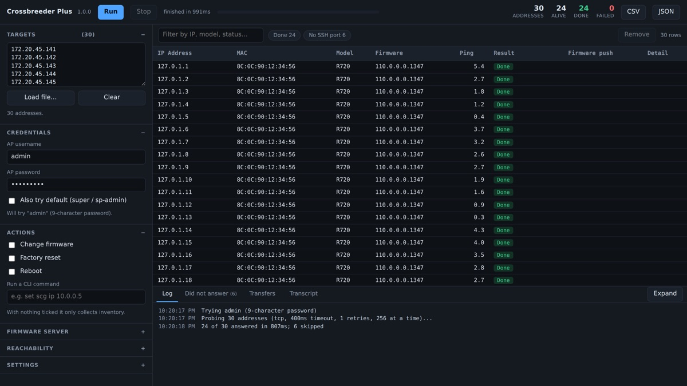

Crossbreeder Plus
By Andrea Coppini
Bulk firmware changes, inventory and CLI work across standalone Ruckus access points — many at a time instead of one after another. No controller, no installer, no runtime: one binary that talks to each AP directly over SSH. Measured against a live 558-AP estate: a full inventory sweep finishes in 6.5 seconds. The original Crossbreeder, working one AP at a time, takes over an hour on a list that size.
Key features
- Pings first. Most addresses on a site list are dead, and each one costs a single unanswered packet instead of an SSH handshake against a timeout. Addresses that never answer are listed, folded into ranges, and can be written out to re-run later.
- Works the APs in parallel — inventory, firmware, factory reset, reboot, or any sequence of AP CLI commands, across ZoneFlex and Unleashed, at whatever concurrency the site can take. A firmware change cannot be combined with a reboot or a factory reset: fw update only starts the download, so restarting the AP would throw the image away.
- Hosts the firmware itself. A push needs nothing installed beyond this binary: it serves the images, works out which of your addresses the APs can actually reach, and shows what each one is downloading. Put %M in the filename — %M_118.2.0.0.875.rcks — and it becomes each AP's model, so one run pushes the right file to a mixed estate.
- Follows the reboot. After the first pass it keeps pinging and re-reading the version, so an AP that drops off reads as rebooting and one that returns on a new version is reported as upgraded — the push is confirmed rather than assumed.
- Reads the country code. Each AP's configured country code is collected alongside the model and firmware, and the console flags one the board reports as locked (Fixed Ctry Code) — the setting an unlock sequence exists to clear. Both are in the CSV and JSON too.
- Exports CSV and JSON, with a row for every address including the silent ones.
Featured in The RUCKUS Vibe, October 2026.